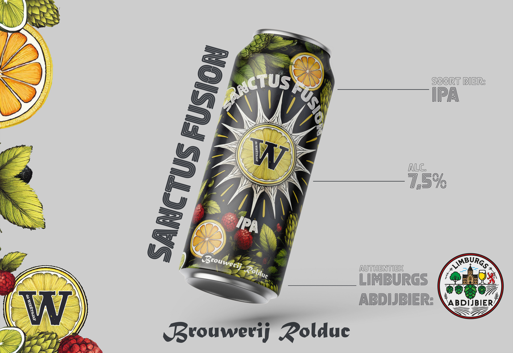

Designer · Developer · Maker
JelgerS Design
Ik ontwerp en bouw digitale en fysieke producten die niet alleen mooi zijn, maar ook écht werken. Van concept tot code en 3D-print, met oog voor detail en een passie voor innovatie.
Ervaring
2+ jaar
Leren door te doen
Projecten
7+
Van websites tot museum-exposities
Over mij
Design met passie
Hoi, ik ben Jelger, een maker die pas stopt als iets optimaal werkt. Ik ben breed geïnteresseerd, leer elke dag bij en kan urenlang in een project duiken om het te perfectioneren. Naast mijn designwerk run ik een eigen 3D-print bedrijf, waarbij mijn producten inmiddels te vinden zijn in het Discovery Museum en het Nationaal Mijn Museum.
Ik geloof dat de echte creativiteit in jezelf zit. AI is voor mij een handig hulpmiddel om mijn workflow te verbeteren, maar de unieke afwerking en het menselijke design staan bij mij altijd centraal.
Visueel Project
Sanctus
Fusion
Voor Dé Wieëtsjaf ontwikkelde ik de volledige branding rond hun exclusieve bier: de Sanctus Fusion, een unieke volle IPA, speciaal gebrouwen door Brouwerij Rolduc. Van logo-ontwerp tot posters, t-shirts, tafelkaarten en social media content. Alles volledig zelf ontworpen in Photoshop, Illustrator en InDesign.

Side Project
3D Print
Bedrijf
Mijn passie voor maken stopt niet bij het scherm. Ik ontwerp en print unieke producten voor o.a. het Discovery Museum, Nationaal Mijn Museum en Boekhandel Deurenberg. Met mijn BambuLab printers lever ik kwaliteit op maat in PLA, PETG en TPU.
Bekijk JelgerS3DContact
Laten we samenwerken
Heb je een project in gedachten of wil je gewoon even sparren? Neem gerust contact op, ik denk graag met je mee over design, development of 3D printing.